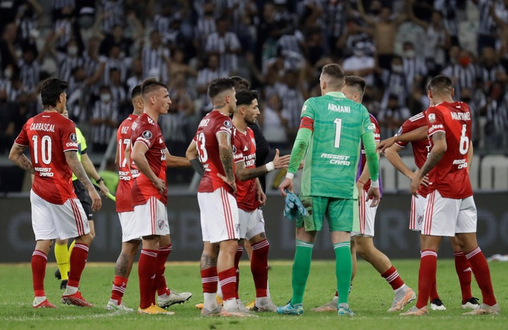
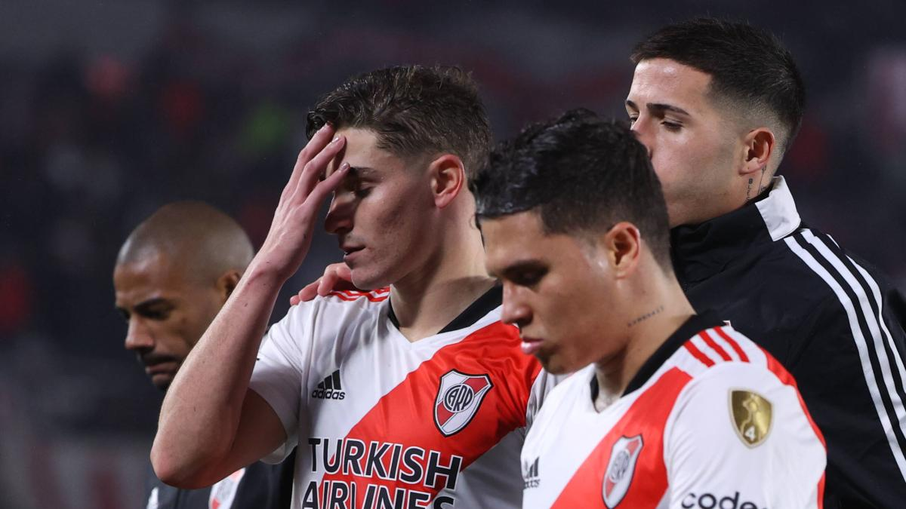
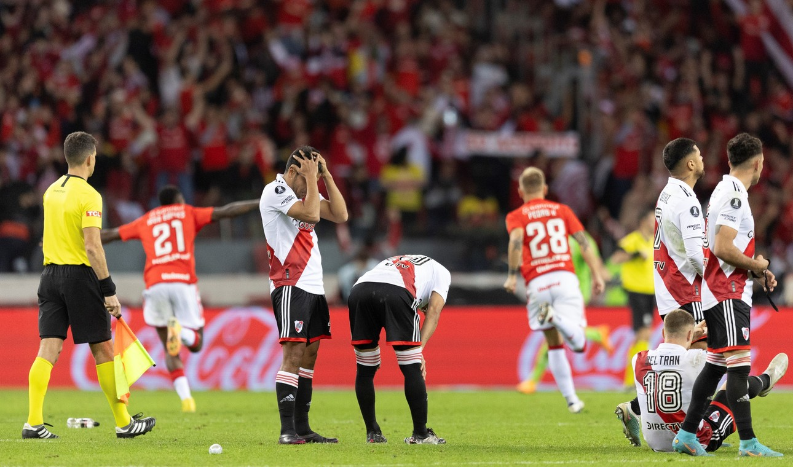
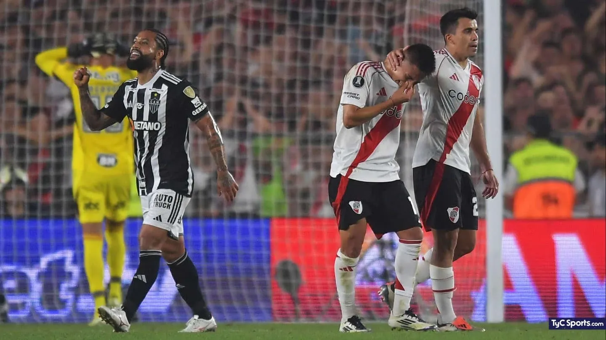

2021 — Fin de una era dorada
Eliminación en cuartos de final de la Libertadores ante Atlético Mineiro, marcando el cierre de la era Gallardo más dominante. Un año que no fue malo teniendo en cuenta las obtenciones de la Copa de la Liga y de la Supercopa.
2022 — Vélez y la polémica del VAR
Caída en octavos ante Vélez Sarsfield, con un rendimiento flojo y una polémica del VAR que anuló un gol clave a Suárez.
2023 — Golpe en Brasil
Eliminado por Internacional en octavos, tras desperdiciar la ventaja en el Monumental y caer por penales en Porto Alegre. Un año decente teniendo en cuenta la obtencion de la liga profesional de forma arrasante.
2024 — Un año para el olvido
Ningun Titulo, eliminado temprano de la Copa Argentina por Temperley y quedando eliminado otra vez con Mineiro en la Libertadores, esta vez en semifinales con global de 3-0 dando pena en Brasil y sin aprovechar el echo de que la final era en el Monumental.
2025 — El presente
En el presente año quedo eliminado de forma contundente por Palmeiras el cual fue un golpe duro. Quedo eliminado en semifinales de Copa Argentina y corre riesgo de no disputar la Copa Libertadores el año que viene. Definitivamente, el peor año de Gallardo al mando de River